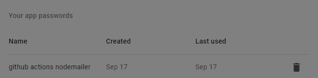

I was speaking to a friend recently who was a developer - and I was looking at some of the things he had built
He had hosted a few websites publicly, but almost zero worked
There were links that took me to nowhere, some pages errored on load and some were dead links that must have changed url path that he hadn't updated the links
It's easy to forget things, and this wasn't the end of the world, but it made me self-consciously check all my own websites. I was 50% sure I had checked everything thoroughly enough. But I was racking my brain to try and think of any obscure link, program or site that I'd hosted that I might need to check
This gave me the idea for project 6, I'd make a program that would automatically check my website on some schedule (maybe daily?) and ensure they weren't erroring
I could then make a bot to email myself if there were any issues - and viola! I'd ensure all my sites I hosted were in a good state, and for each new project - I'd just need to add the new url to my text file for the new website-pinger
Sounded simple enough, so I started!
Creating the Bot email
Firstly, I made myself a Gmail that would send my bot email, I decided upon something like
- bot@gmail.com
I now needed to allow alternative access to this account, so my Node dependencies could access the account
This is pretty straightforward to do, and you just need to add a new "App Password" to your account - which is handy, as it doesn't compromise your "real" password- as you just get a randomly generated password from Google, and you can label what App has this password so you can remember
Create the program
My base functionality was an Axios GET request to a url. I decided to store all the url's in a Markdown file, and then I'd just need to read through the file line by line, making a GET request to each url in the list
I used some GitHub secrets for the password, and email addresses - as there are a lot of bots who scrape GitHub repos to try and sell emails & allowed me to protect my passwords too
I then need to create an email body, that I will send myself the status update
You can view the code here here
I got this all working locally, and then moved onto deploying it!
Deploy
I have deployed two different things onto GitHub actions and both times have never been painless
Environment variables that aren't accessible, the Action failing to run and silent YAML parsing failures were common "gotchas" I've encountered when deploying both times
GitHub Actions feedback loops are a little frustrating to debug - but despite the setbacks, I got it deployed and working, and my email looks like this

Final steps
I wanted to tidy up my Git history as I made debug commits to try and get the GitHub action to work
It ended up being pretty simple to do as I created a new branch, committed everything to the temp-branch, deleted main and finally renamed my branch to main and pushed
git checkout --orphan tmp-main # create a temp branch
git add -A # Add all files and commit them
git commit -m 'Add files'
git branch -D main # Deletes the main branch
git branch -m main # Rename the current branch to main
git push -f origin main
Conclusion
All in all, a pretty fun project - and I gained a bit more exposure to NodeMailer which I hadn't used before
I have some "flows" and steps I try and follow when I release new work publicly, so I have also updated my steps to ensure I add each new url to the website pinger
If you're reading this in the future (18th Sept 2022) I may change the frequency of the emails if it's overkill to mail daily but the program is cron based, so it's only a one line change!
Hope this was interesting to you + feel free to clone and add your own url's if you have a similar use-case
Onto project seven ✔️